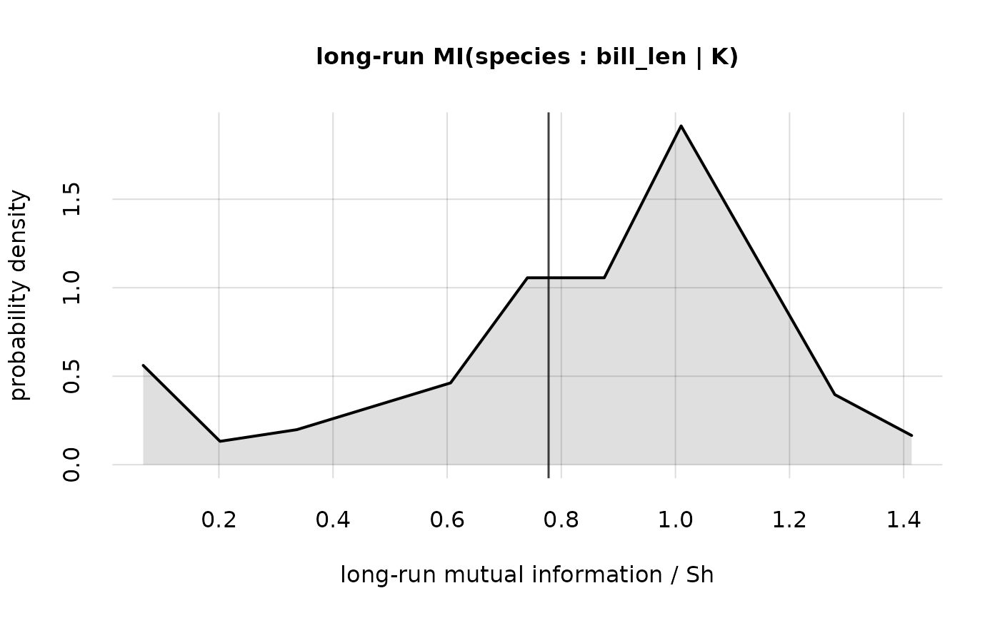

The mutual information calculated with the mutualinfo() function, and outputted as a "mi" object, has an associated "revisability" that comes from the finite size of the data sample. A much larger sample might reveal a different value of mutual information.
The hist() method for a "mi" object is a utility to visualize this kind of revisability, in the form of a distribution: it shows how the mutual information could change, if we collected a much larger (infinite) data sample, and how likely such change would be. The distribution is represented by a histogram formed from samples of revised mutual information. The bin size is chosen according to the Monte Carlo accuracy.
Arguments
- x
Object of class "mi", obtained with
mutualinfo().- breaks
as in function
graphics::hist(), orNULL(default). ValueNULLdetermines the bin width from the Monte Carlo accuracy (roughly speaking, each bin spans two standard deviations).- lty, lwd, col, alpha.f, xlab, ylab, xlim, ylim, main, grid, axes, add
see analogous arguments in
graphics::matplot()- alpha.f.fill
Numeric, default 0.125: opacity of the histogram filling.
0means no filling.- showvalue
Logical, default
TRUE: show the mutual information obtained from the current data sample?- ...
Other parameters to be passed to
pplot().
Value
Invisibly, an object of class "histogram".
See also
mutualinfo() to calculate mutual information and its revisability.
print.mi() ] to plot mutual information and quantiles calculated by mutualinfo()
pplot() (on which hist.mi() is based) for more general plots.
Examples
## Load the example `K`nowledge object calculated from the "penguins" dataset;
## variates: 'species' and 'bill_len'
K <- Kexample
## calculate the mutual information and its revisability
MI <- mutualinfo(Y1names = 'species', Y2names = 'bill_len', K = K, nv = 2)
## show the possible revisability of the mutual information,
## if a much larger data sample were collected
hist(MI)
